Object Storage
OpenStack Object Storage (Swift) is a highly available, distributed, eventually consistent object/blob store. Object Storage is used to manage cost-effective and long-term preservation and storage of large amounts of data across clusters of standard server hardware. The common use cases include the storage, backup and archiving of unstructured data, such as documents, static web content, images, video files, and virtual machine images, etc.
The end-users can interact with the object storage system through a RESTful HTTP API i.e. the Swift API or use one of the many client libraries that exist for all of the popular programming languages, such as Java, Python, Ruby, and C# based on provisioned quotas. Swift also supports and is compatible with Amazon's Simple Storage Service (S3) API that makes it easier for the end-users to move data between multiple storage end points and supports hybrid cloud setup.
1. Access by Web Interface i.e. Horizon Dashboard
To get started, navigate to Project -> Object Store -> Containers.
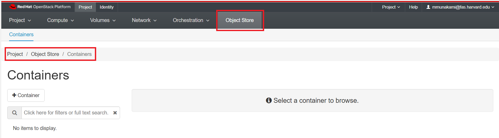
Create a Container
In order to store objects, you need at least one Container to put them in. Containers are essentially top-level directories. Other services use the terminology buckets.
Click Create Container. Give your container a name.

Important Note
The container name needs to be unique, not just within your project but across all of our OpenStack installation. If you get an error message after trying to create the container, try giving it a more unique name.
For now, leave the "Container Access" set to Private.
Upload a File
Click on the name of your container, and click the Upload File icon as shown below:

Click Browse and select a file from your local machine to upload.
It can take a while to upload very large files, so if you're just testing it out you may want to use a small text file or similar.

By default the File Name will be the same as the original file, but you can change it to another name. Click "Upload File". Your file will appear inside the container as shown below once successful:
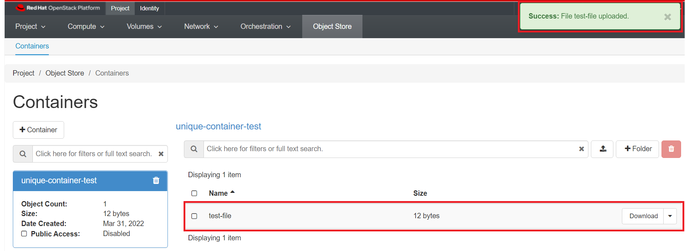
Using Folders
Files stored by definition do not organize objects into folders, but you can use folders to keep your data organized.
On the backend, the folder name is actually just prefixed to the object name, but from the web interface (and most other clients) it works just like a folder.
To add a folder, click on the "+ folder" icon as shown below:

Make a container public
Making a container public allows you to send your collaborators a URL that gives access to the container's contents.
Click on your container's name, then check the "Public Access" checkbox. Note that "Public Access" changes from "Disabled" to "Link".
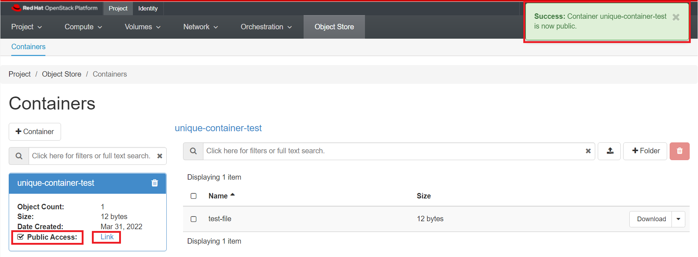
Click "Link" to see a list of object in the container. This is the URL of your container.
Important Note
Anyone who obtains the URL will be able to access the container, so this is not recommended as a way to share sensitive data with collaborators.
In addition, everything inside a public container is public, so we recommend creating a separate container specifically for files that should be made public.
To download the file test-file we would use the following url.
Very Important Information
Here 4c5bccef73c144679d44cbc96b42df4e is specific Tenant Id or
Project Id. You can get this value when you click on the public container's
Link on a new browser tab.
Or, you can just click on "Download" next to the file's name as shown below:
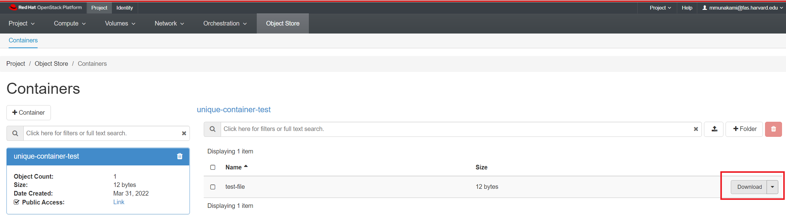
You can also interact with public objects using a utility such as curl:
curl https://stack.nerc.mghpcc.org:13808/v1/AUTH_4c5bccef73c144679d44cbc96b42df4e/unique-container-test
test-file
To download a file:
curl -o local-file.txt https://stack.nerc.mghpcc.org:13808/v1/AUTH_4c5bccef73c144679d44cbc96b42df4e/unique-container-test/test-file
Make a container private
You can make a public container private by clicking on your container's name, then uncheck the "Public Access" checkbox. Note that "Public Access" changes from "Link" to "Disabled".
This will deactivate the public URL of the container and then it will show "Disabled".
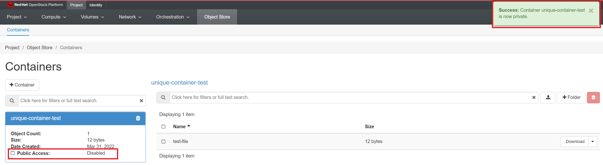
2. Access by using APIs
i. OpenStack CLI
- Prerequisites
To run the OpenStack CLI commands, you need to have:
- OpenStack CLI setup, see OpenStack Command Line setup for more information.
Some Object Storage management examples
Create a container
In order to create a container in the Object Storage service, you can use the OpenStack client with the following command.
[user@laptop ~]$ openstack container create mycontainer
+---------------------------------------+-------------+------------------------------------+
| account | container | x-trans-id |
+---------------------------------------+-------------+------------------------------------+
| AUTH_4c5bccef73c144679d44cbc96b42df4e | mycontainer | txb875f426a011476785171-00624b37e8 |
+---------------------------------------+-------------+------------------------------------+
Once created you can start adding objects.
Manipulate objects in a container
To upload files to a container you can use the following command
$ openstack object create --name my_test_file mycontainer test_file.txt
+--------------+-------------+----------------------------------+
| object | container | etag |
+--------------+-------------+----------------------------------+
| my_test_file | mycontainer | e3024896943ee80422d1e5ff44423658 |
+--------------+-------------+----------------------------------+
Once uploaded you can see the metadata through:
$ openstack object show mycontainer my_test_file
+----------------+---------------------------------------+
| Field | Value |
+----------------+---------------------------------------+
| account | AUTH_4c5bccef73c144679d44cbc96b42df4e |
| container | mycontainer |
| content-length | 26 |
| content-type | application/octet-stream |
| etag | e3024896943ee80422d1e5ff44423658 |
| last-modified | Mon, 04 Apr 2022 18:27:14 GMT |
| object | my_test_file |
+----------------+---------------------------------------+
You can save the contents of the object from your container to your local machine by using:
$ openstack object save mycontainer my_test_file --file test_file.txt
Very Important
Please note that this will overwrite the file in the local directory.
Finally you can delete the object with the following command
$ openstack object delete mycontainer my_test_file
Delete the container
If you want to delete the container, you can use the following command
$ openstack container delete mycontainer
If the container has some data, you can trigger the recursive option to delete the objects internally.
$ openstack container delete mycontainer
Conflict (HTTP 409) (Request-ID: tx6b53c2b3e52d453e973b4-00624b400f)
So, try to delete the container recursively using command
$ openstack container delete --recursive mycontainer
List existing containers
You can check the existing containers with
$ openstack container list
+---------------+
| Name |
+---------------+
| mycontainer |
+---------------+
Swift quota utilization
To check the overall space used, you can use the following command
$ openstack object store account show
+------------+---------------------------------------+
| Field | Value |
+------------+---------------------------------------+
| Account | AUTH_4c5bccef73c144679d44cbc96b42df4e |
| Bytes | 665 |
| Containers | 1 |
| Objects | 3 |
+------------+---------------------------------------+
To check the space used by a specific container
$ openstack container show mycontainer
+----------------+---------------------------------------+
| Field | Value |
+----------------+---------------------------------------+
| account | AUTH_4c5bccef73c144679d44cbc96b42df4e |
| bytes_used | 665 |
| container | mycontainer |
| object_count | 3 |
| read_acl | .r:*,.rlistings |
| storage_policy | Policy-0 |
+----------------+---------------------------------------+
ii. Swift Interface
This is a python client for the Swift API. There's a Python API
(the swiftclient module), and a command-line script (swift).
-
This example uses a
Python3virtual environment, but you are free to choose any other method to create a local virtual environment likeConda.py -3 -m venv venv -
Activate the virtual environment by running:
on Linux/Mac:
source venv/bin/activateon Windows:
venv\Scripts\activate
Install Python Swift Client page at PyPi
-
Once virtual environment is activated, install
python-swiftclientandpython-keystoneclientpip install python-swiftclient python-keystoneclient
-
Swift authenticates using a user, tenant, and key, which map to your OpenStack username, project,and password.
For this, you need to download the "NERC's OpenStack RC File" with the
credentials for your NERC project from the NERC's OpenStack dashboard.
Then you need to source that RC file using: source *-openrc.sh. You can
read here
on how to do this.
By sourcing the "NERC's OpenStack RC File", you will set the all required environmental variablesand then type the following command to get a lits of your containers:
swift list
This will output your existing container on your project, for e.g.
unique-container-test
To upload a file to the above listed i.e. unique-container-test, you can run
the following command:
swift upload unique-container-test ./README.md
Other helpful Swift commands:
delete Delete a container or objects within a container.
download Download objects from containers.
list Lists the containers for the account or the objects
for a container.
post Updates meta information for the account, container,
or object; creates containers if not present.
copy Copies object, optionally adds meta
stat Displays information for the account, container,
or object.
upload Uploads files or directories to the given container.
capabilities List cluster capabilities.
tempurl Create a temporary URL.
auth Display auth related environment variables.
bash_completion Outputs option and flag cli data ready for
bash_completion.
Helpful Tip
Type swift -h to learn more about using the swift commands. The client
has a --debugflag, which can be useful if you are facing any issues.
iii. Using AWS CLI
The Ceph Object Gateway supports basic operations through the Amazon S3 interface.
You can use both high-level (s3) commands with the AWS CLI and API-Level (s3api) commands with the AWS CLI to access object storage on your NERC project.
- Prerequisites
To run the s3 or s3api commands, you need to have:
-
AWS CLI installed, see Installing or updating the latest version of the AWS CLI for more information.
-
The NERC's Swift End Point URL:
https://stack.nerc.mghpcc.org:13808 -
Understand these Amazon S3 terms:
i. Bucket – A top-level Amazon S3 folder.
ii. Prefix – An Amazon S3 folder in a bucket.
iii. Object – Any item that's hosted in an Amazon S3 bucket.
Configuring the AWS CLI
To access this interface, you must login through the OpenStack Dashboard and navigate to "Projects > API Access" where you can click on "Download OpenStack RC File" and select "EC2 Credentials".
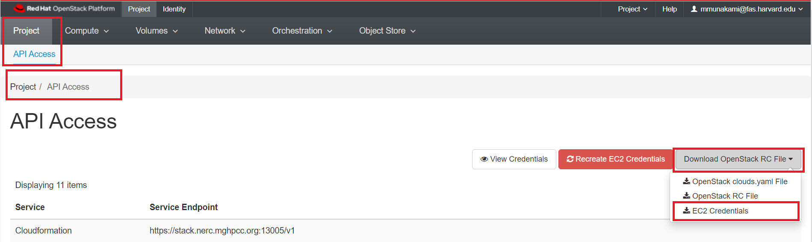
This will download a file zip file including ec2rc.sh file that has content
similar to shown below. The important parts are EC2_ACCESS_KEY and EC2_SECRET_KEY,
keep them noted.
#!/bin/bash
NOVARC=$(readlink -f "${BASH_SOURCE:-${0}}" 2>/dev/null) || NOVARC=$(python -c 'import os,sys; print os.path.abspath(os.path.realpath(sys.argv[1]))' "${BASH_SOURCE:-${0}}")
NOVA_KEY_DIR=${NOVARC%/*}
export EC2_ACCESS_KEY=...
export EC2_SECRET_KEY=...
export EC2_URL=https://localhost/notimplemented
export EC2_USER_ID=42 # nova does not use user id, but bundling requires it
export EC2_PRIVATE_KEY=${NOVA_KEY_DIR}/pk.pem
export EC2_CERT=${NOVA_KEY_DIR}/cert.pem
export NOVA_CERT=${NOVA_KEY_DIR}/cacert.pem
export EUCALYPTUS_CERT=${NOVA_CERT} # euca-bundle-image seems to require this set
alias ec2-bundle-image="ec2-bundle-image --cert ${EC2_CERT} --privatekey ${EC2_PRIVATE_KEY} --user 42 --ec2cert ${NOVA_CERT}"
alias ec2-upload-bundle="ec2-upload-bundle -a ${EC2_ACCESS_KEY} -s ${EC2_SECRET_KEY} --url ${S3_URL} --ec2cert ${NOVA_CERT}"
-
Source the downloaded OpenStack RC File by using:
source *-openrc.shcommand. -
Sourcing the RC File will set the required
${OS_PROJECT_NAME}envrionment variable. Then run aws configuration command which requires theEC2_ACCESS_KEYandEC2_SECRET_KEYkeys that you noted fromec2rc.shfile (above):$> aws configure --profile "'${OS_PROJECT_NAME}'" AWS Access Key ID [None]: <EC2_ACCESS_KEY> AWS Secret Access Key [None]: <EC2_SECRET_KEY> Default region name [None]: Default output format [None]:
Information
We need to have a profile that you use must have permissions to allow the AWS operations can be performed.
Listing buckets using aws-cli
i. Using s3api:
$ aws --profile "'${OS_PROJECT_NAME}'" --endpoint-url=https://stack.nerc.mghpcc.org:13808 \
s3api list-buckets
{
"Buckets": [
{
"Name": "unique-container-test",
"CreationDate": "2009-02-03T16:45:09+00:00"
}
],
"Owner": {
"DisplayName": "Test Project-f69dcff:mmunakami@fas.harvard.edu",
"ID": "Test Project-f69dcff:mmunakami@fas.harvard.edu"
}
}
ii. Alternatively, you can do the same using s3:
aws --profile "'${OS_PROJECT_NAME}'" --endpoint-url=https://stack.nerc.mghpcc.org:13808 \
s3 ls
Output:
2009-02-03 11:45:09 unique-container-test
To list contents inside bucket
aws --profile "'${OS_PROJECT_NAME}'" --endpoint-url=https://stack.nerc.mghpcc.org:13808 \
s3 ls s3://<your-bucket>
To make a bucket
aws --profile "'${OS_PROJECT_NAME}'" --endpoint-url=https://stack.nerc.mghpcc.org:13808 \
s3 mb s3://<your-bucket>
Adding/ Copying files from one container to another container
-
Single file copy using
cpcommand:The aws tool provides a
cpcommand to move files to yours3bucket:$ aws --profile "'${OS_PROJECT_NAME}'" --endpoint-url=https://stack.nerc.mghpcc.org:13808 \ s3 cp <Your-file> s3://<your-bucket>/Output:
upload: .\<Your-file> to s3://<your-bucket>/<Your-file> -
Whole directory copy using the
--recursiveflag$ aws --profile "'${OS_PROJECT_NAME}'" --endpoint-url=https://stack.nerc.mghpcc.org:13808 \ s3 cp <Your-directory> s3://<your-bucket>/ --recursiveOutput:
upload: <your-directory>/<file0> to s3://<your-bucket>/<file0> upload: <your-directory>/<file1> to s3://<your-bucket>/<file1> ... upload: <your-directory>/<fileN> to s3://<your-bucket>/<fileN>
You can then use aws s3 ls to check that your files have been properly uploaded:
aws --profile "'${OS_PROJECT_NAME}'" --endpoint-url=https://stack.nerc.mghpcc.org:13808 \
s3 ls s3://<your-bucket>/
Output:
2022-04-04 16:32:38 <size> <file0>
2022-04-04 16:32:38 <size> <file1>
...
2022-04-04 16:25:50 <size> <fileN>
Other Useful Flags
Additionally, aws cp provides an --exclude flag to filter files not to be transferred, the syntax is: --exclude "<regex>"
To delete an object from a bucket
aws --profile "'${OS_PROJECT_NAME}'" --endpoint-url=https://stack.nerc.mghpcc.org:13808 \
s3 rm s3://<your-bucket>/argparse-1.2.1.tar.gz
To remove a bucket
aws --profile "'${OS_PROJECT_NAME}'" --endpoint-url=https://stack.nerc.mghpcc.org:13808 \
s3 rb s3://<your-bucket>
iv. Using s3cmd
S3cmd is a free command line tool and client for uploading, retrieving and
managing data in Amazon S3 and other cloud storage service providers that use
the S3 protocol.
-
Prerequisites
-
S3cmd installed, see Download and Install the latest version of the S3cmd for more information.
Configuring s3cmd
The EC2_ACCESS_KEY and EC2_SECRET_KEY keys that you noted from ec2rc.sh
file can then be plugged into s3cfg config file.
The .s3cfg file requires the following configuration to work with our Object
storage service:
# Setup endpoint
host_base = stack.nerc.mghpcc.org:13808
host_bucket = stack.nerc.mghpcc.org:13808
use_https = True
# Setup access keys
access_key = 'YOUR_EC2_ACCESS_KEY_FROM_ec2rc_FILE'
secret_key = 'YOUR_EC2_SECRET_KEY_FROM_ec2rc_FILE', #pragma: allowlist secret
# Enable S3 v4 signature APIs
signature_v2 = False
We are assuming that the configuration file is placed in default location i.e.
$HOME/.s3cfg. If it is not the case you need to add the parameter --config=FILE
with the location of your configuration file to override the config location.
Using s3cmd
To list buckets
Use the following command to list all s3 buckets
s3cmd ls
Or,
$ s3cmd ls s3://
2009-02-03 16:45 s3://nerc-test-container
2009-02-03 16:45 s3://second-mycontainer
2009-02-03 16:45 s3://unique-container-test
Create a new bucket
In order to create a bucket, you can use s3cmd with the following command
$ s3cmd mb s3://mybucket
Bucket 's3://mybucket/' created
$ s3cmd ls
2009-02-03 16:45 s3://mybucket
2009-02-03 16:45 s3://nerc-test-container
2009-02-03 16:45 s3://second-mycontainer
2009-02-03 16:45 s3://unique-container-test
To copy an object to bucket
Below command will upload file file.txt to the bucket using s3cmd command.
$ s3cmd put ~/file.txt s3://mybucket/
upload: 'file.txt' -> 's3://mybucket/file.txt' [1 of 1]
0 of 0 0% in 0s 0.00 B/s done
s3cmd also allows to set additional properties to the objects stored. In the
example below, we set the content type with the --mime-type option and the
cache-control parameter to 1 hour with --add-header.
s3cmd put --mime-type='application/json' --add-header='Cache-Control: max-age=3600' ~/file.txt s3://mybucket
Uploading Directory in bucket
If we need to upload entire directory use -r to upload it recursively as below.
$ s3cmd put -r <your-directory> s3://mybucket/
upload: 'backup/hello.txt' -> 's3://mybucket/backup/hello.txt' [1 of 1]
0 of 0 0% in 0s 0.00 B/s done
List the objects of bucket
List the objects of the bucket using ls switch with s3cmd.
$ s3cmd ls s3://mybucket/
DIR s3://mybucket/backup/
2022-04-05 03:10 0 s3://mybucket/file.txt
2022-04-05 03:14 0 s3://mybucket/hello.txt
To copy/ download an object to local system
Use the following command to download files from the bucket:
$ s3cmd get s3://mybucket/file.txt
download: 's3://mybucket/file.txt' -> './file.txt' [1 of 1]
0 of 0 0% in 0s 0.00 B/s done
To sync local file/directory to a bucket
$ s3cmd sync newdemo s3://mybucket
upload: 'newdemo/newdemo_file.txt' -> 's3://mybucket/newdemo/newdemo_file.txt' [1 of 1]
0 of 0 0% in 0s 0.00 B/s done
To sync bucket or object with local filesystem
$ s3cmd sync s3://unique-container-test otherlocalbucket
download: 's3://unique-container-test/README.md' -> 'otherlocalbucket/README.md' [1 of 3]
653 of 653 100% in 0s 4.54 kB/s done
download: 's3://unique-container-test/image.png' -> 'otherlocalbucket/image.png' [2 of 3]
0 of 0 0% in 0s 0.00 B/s done
download: 's3://unique-container-test/test-file' -> 'otherlocalbucket/test-file' [3 of 3]
12 of 12 100% in 0s 83.83 B/s done
Done. Downloaded 665 bytes in 1.0 seconds, 665.00 B/s.
To delete an object from bucket
You can delete files from the bucket with the following s3cmd command
$ s3cmd del s3://unique-container-test/README.md
delete: 's3://unique-container-test/README.md'
To delete directory from bucket
$ s3cmd del s3://mybucket/newdemo
delete: 's3://mybucket/newdemo'
To delete a bucket
$ s3cmd rb s3://mybucket
ERROR: S3 error: 409 (BucketNotEmpty): The bucket you tried to delete is not empty
Important Information
The above command failed because of the bucket was not empty! You can remove
all objects inside the bucket and then use the command again. Or, you can
run the following command with -r or --recursive flag i.e.
s3cmd rb s3://mybucket -r or s3cmd rb s3://mybucket --recursive.
v. Using rclone
rclone is a convenient and performant command-line tool for transferring files
and synchronizing directories directly between your local file systems and the
NERC's containers.
- Prerequisites
To run the rclone commands, you need to have:
rcloneinstalled, see Downloading and Installing the latest version of the rclone for more information.
Configuring rclone
First, you’ll need to configure rclone. As the object storage systems
have quite complicated authentication these are kept in a config file.
If you run rclone config file you will see where the default location is
for you.
Note
For Windows users, you many need to specify the full path to the rclone executable file, if its not included in your systems PATH variable.
The EC2_ACCESS_KEY and EC2_SECRET_KEY keys that you noted from ec2rc.sh
file can then be plugged into rclone config file.
Edit the config file's content on the path location described by
rclone config file command and add the following entry with the name [nerc]:
[nerc]
type = s3
env_auth = false
provider = Other
endpoint = https://stack.nerc.mghpcc.org:13808
acl = public-read
access_key_id = 'YOUR_EC2_ACCESS_KEY_FROM_ec2rc_FILE'
secret_access_key = 'YOUR_EC2_SECRET_KEY_FROM_ec2rc_FILE', #pragma: allowlist secret
location_constraint =
server_side_encryption =
More about the config for AWS S3 compatible API can be seen here.
Important Information
Mind that if set env_auth = true then it will take variables from environment,
so you shouldn't insert it in this case.
OR, You can locally copy this content to a new config file and then use this
flag to override the config location, e.g. rclone --config=FILE
Interactive Configuration
Run rclone config to setup. See rclone config docs
for more details.
Using rclone
rclone supports many subcommands (see
the complete list of rclone subcommands).
A few commonly used subcommands (assuming you configured the NERC Object Storage
as nerc):
Listing the Containers and Files and Folders within a Container
Once your Object Storage has been configured in rclone, you can then use the rclone interface to List all the Containers with the "lsd" command
rclone lsd "nerc:"
or,
rclone lsd "nerc:" --config=rclone.conf
For e.g.,
$ rclone lsd "nerc:" --config=rclone.conf
-1 2009-02-03 11:45:09 -1 second-mycontainer
-1 2009-02-03 11:45:09 -1 unique-container-test
To list the files and folders available within a container i.e. "unique-container-test" in this case, within a container we can use the "ls" command
$ rclone ls "nerc:unique-container-test/"
653 README.md
0 image.png
12 test-file
Uploading and Downloading Files and Folders
rclone support a variety of options to allow you to Copy, Sync and Move
files from one destination to another.
A simple example of this can be seen below, where we copy (Upload) the file
"upload.me" to the <your-bucket> container:
rclone copy "./upload.me" "nerc:<your-bucket>/"
Another example, to copy (Download) the file "upload.me" from the
<your-bucket> container to your local:
rclone -P copy "nerc:<your-bucket>/upload.me" "./"
Also, to Sync files into to the <your-bucket> container - try with
--dry-run first
rclone --dry-run sync /path/to/files nerc:<your-bucket>
Then sync for real
rclone sync /path/to/files nerc:<your-bucket>
Mounting object storage on local filesystem
Linux:
First, you need to create a directory on which you will mount your filesystem:
$ mkdir ~/mnt-rclone
Then you can simply mount your object storage with:
$ rclone -vv --vfs-cache-mode writes mount nerc: ~/mnt-rclone
Windows:
First you have to download Winfsp:
WinFsp is an open source Windows File System Proxy which provides a FUSE emulation layer.
Then you can simply mount your object storage with (no need to create the directory in advance):
rclone -vv --vfs-cache-mode writes mount nerc: C:/mnt-rclone
vfs-cache-mode flag enable file caching, you can use either writes or full
option. For further explanation you can see official documentation.
Now that your object storage is mounted, you can list, create and delete files in it.
Unmount object storage
To unmount, simply press CTRL-C and the mount will be interrupted.
vi. Using client libraries
a. The EC2_ACCESS_KEY and EC2_SECRET_KEY keys that you noted from ec2rc.sh
file can then be plugged into your application. See below example using the
Python Boto3 library,
which connects through the S3 API interface through EC2
credentials, and perform some basic operations on available buckets and file
that the user has access to.
import boto3
# https://boto3.amazonaws.com/v1/documentation/api/latest/reference/services/s3.html#bucket
s3 = boto3.resource('s3',
aws_access_key_id='YOUR_EC2_ACCESS_KEY_FROM_ec2rc_FILE',
aws_secret_access_key='YOUR_EC2_SECRET_KEY_FROM_ec2rc_FILE', #pragma: allowlist secret
endpoint_url='https://stack.nerc.mghpcc.org:13808',
)
# List all containers
for bucket in s3.buckets.all():
print(' ->', bucket)
# List all objects in a container i.e. unique-container-test is your current Container
bucket = s3.Bucket('unique-container-test')
for obj in bucket.objects.all():
print(' ->', obj)
# Download an S3 object i.e. test-file a file available in your unique-container-test Container
s3.Bucket('unique-container-test').download_file('test-file', './test-file.txt')
# Add an image to the bucket
# bucket.put_object(Body=open('image.png', mode='rb'), Key='image.png')
We can configure the Python Boto3 library, to work with the saved aws profile.
import boto3
# https://boto3.amazonaws.com/v1/documentation/api/latest/reference/core/session.html
session = boto3.Session(profile_name='<YOUR_CONFIGURED_AWS_PROFILE_NAME>')
# List all containers
s3 = boto3.client('s3', endpoint_url='https://stack.nerc.mghpcc.org:13808',)
response = s3.list_buckets()
for bucket in response['Buckets']:
print(' ->', bucket)
b. The EC2_ACCESS_KEY and EC2_SECRET_KEY keys that you noted from ec2rc.sh
file can then be plugged into your application. See below example using the
Python Minio library,
which connects through the S3 API interface through EC2
credentials, and perform some basic operations on available buckets and file
that the user has access to.
from minio import Minio
# Create client with access key and secret key.
# https://docs.min.io/docs/python-client-api-reference.html
client = Minio(
"stack.nerc.mghpcc.org:13808",
access_key='YOUR_EC2_ACCESS_KEY_FROM_ec2rc_FILE',
secret_key='YOUR_EC2_SECRET_KEY_FROM_ec2rc_FILE', #pragma: allowlist secret
)
# List all containers
buckets = client.list_buckets()
for bucket in buckets:
# print(bucket.name, bucket.creation_date)
print(' ->', bucket)
# Make 'nerc-test-container' container if not exist.
found = client.bucket_exists("nerc-test-container")
if not found:
client.make_bucket("nerc-test-container")
else:
print("Bucket 'nerc-test-container' already exists")
# Upload './nerc-backup.zip' as object name 'nerc-backup-2022.zip'
# to bucket 'nerc-test-container'.
client.fput_object(
"nerc-test-container", "nerc-backup-2022.zip", "./nerc-backup.zip",
)
3. Using Graphical User Interface (GUI) Tools
i. Using WinSCP
WinSCP is a popular and free open-source SFTP client, SCP client, and FTP client for Windows. Its main function is file transfer between a local and a remote computer, with some basic file management functionality using FTP, FTPS, SCP, SFTP, WebDAV or S3 file transfer protocols.
-
Prerequisites
-
WinSCP installed, see Download and Install the latest version of the WinSCP for more information.
-
Go to WinSCP menu and open "Options > Preferences".
-
When the "Preferences" dialog window appears, select "Transfer" in the options on the left pane.
-
Click on "Edit" button.
-
Then, on shown popup dialog box review the "Common options" group, uncheck the "Preserve timestamp" option as shown below:
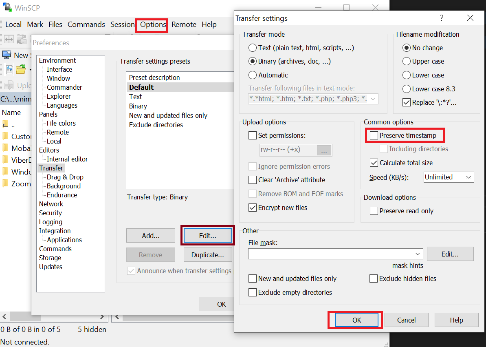
Configuring WinSCP
- Click on "New Session" tab button as shown below:
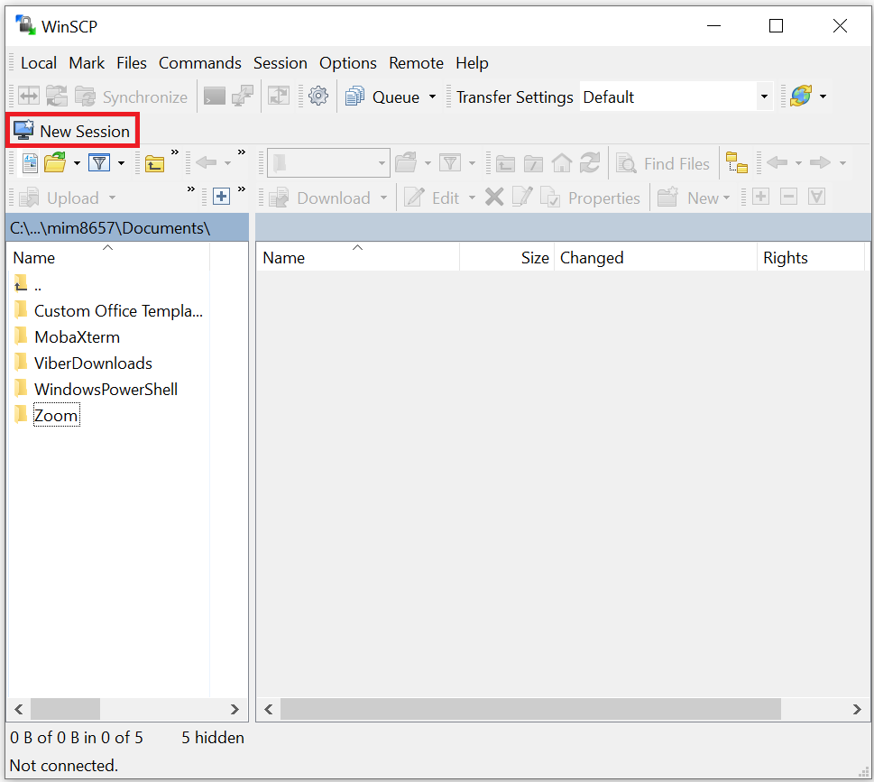
- Select "Amazon S3" from the "File protocol" dropdown options as shown below:
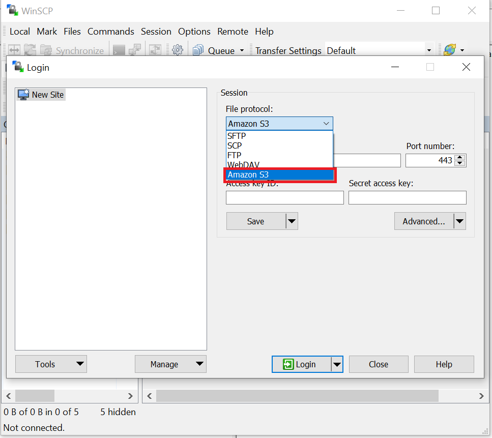
-
Provide the following required endpoint information:
"Host name": "stack.nerc.mghpcc.org"
"Port number": "13808"
The
EC2_ACCESS_KEYandEC2_SECRET_KEYkeys that you noted fromec2rc.shfile can then be plugged into "Access key ID" and "Secret access key" respectively.
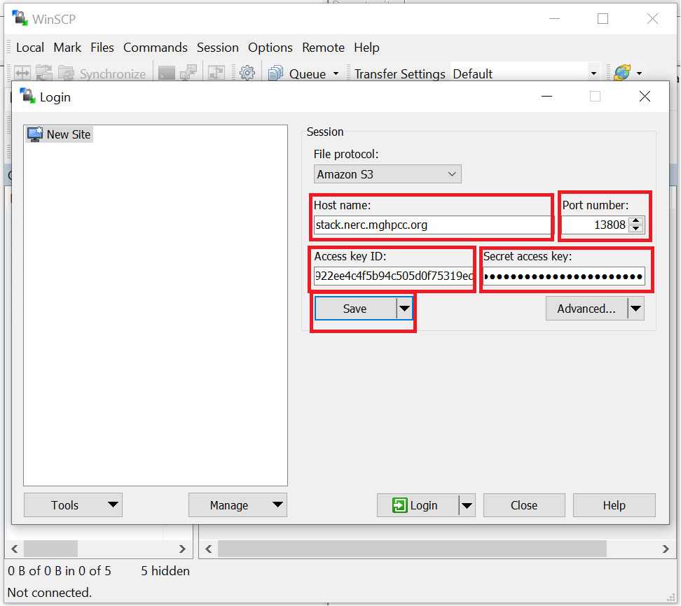
Helpful Tips
You can save your above configured session with some preferred name by clicking the "Save" button and then giving a proper name to your session. So that next time you don't need to again manually enter all your configuration.
Using WinSCP
You can follow above step to manually add a new session next time you open WinSCP or, you can connect to your previously saved session (as listed on popup dialog will show your all saved session name list) that will show up by just clicking on the session name.
Then click "Login" button to connect to your NERC project's Object Storage as shown below:
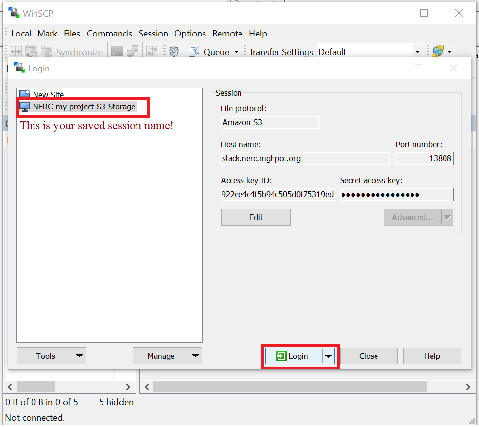
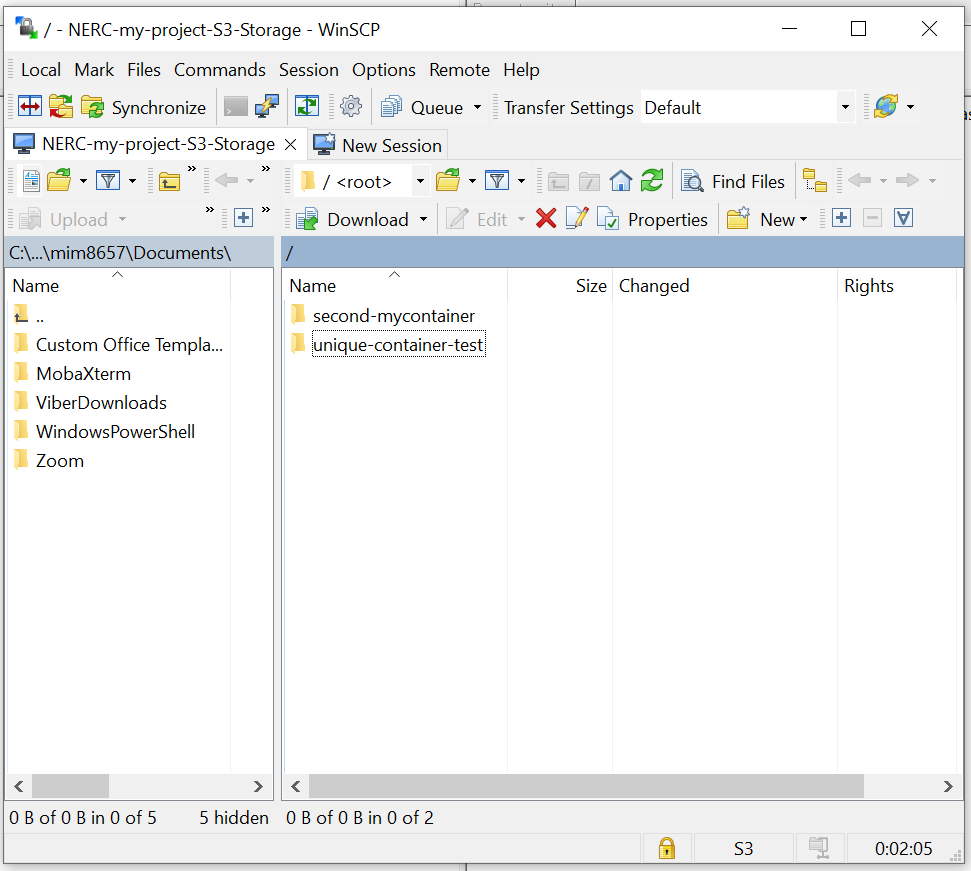
ii. Using Cyberduck
Cyberduck is a libre server and cloud storage browser for Mac and Windows. With an easy-to-use interface, connect to servers, enterprise file sharing, and cloud storage.
-
Prerequisites
-
Cyberduck installed, see Download and Install the latest version of the Cyberduck for more information.
Configuring Cyberduck
- Click on "Open Connection" tab button as shown below:
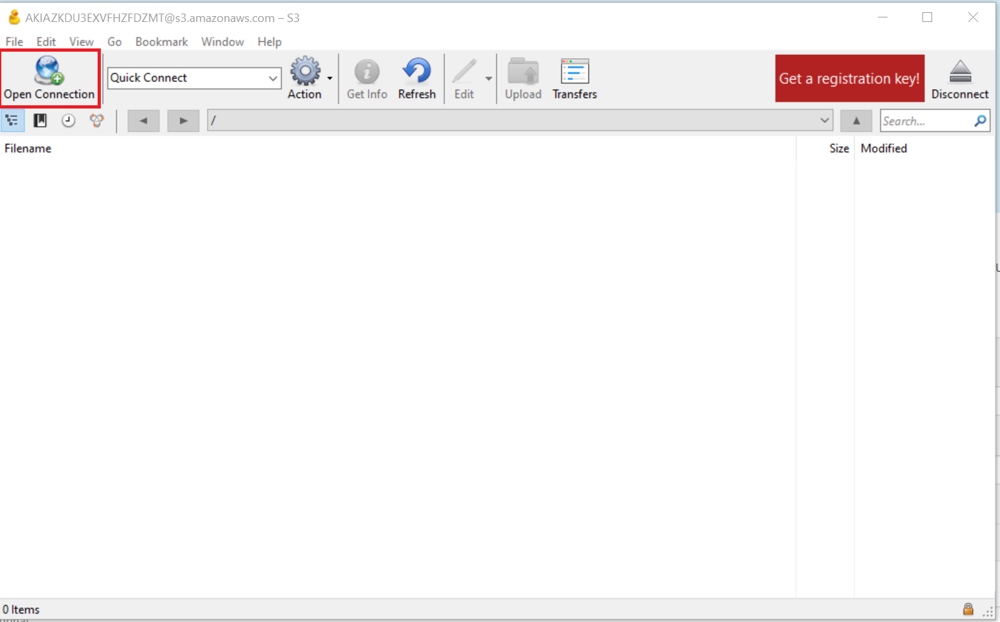
- Select "Amazon S3" from the dropdown options as shown below:
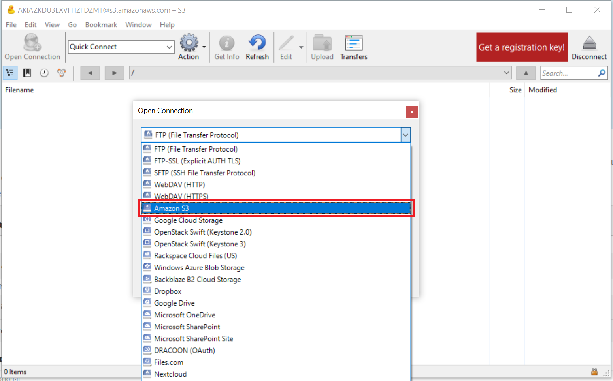
-
Provide the following required endpoint information:
"Server": "stack.nerc.mghpcc.org"
"Port": "13808"
The
EC2_ACCESS_KEYandEC2_SECRET_KEYkeys that you noted fromec2rc.shfile can then be plugged into "Access key ID" and "Secret Access Key" respectively
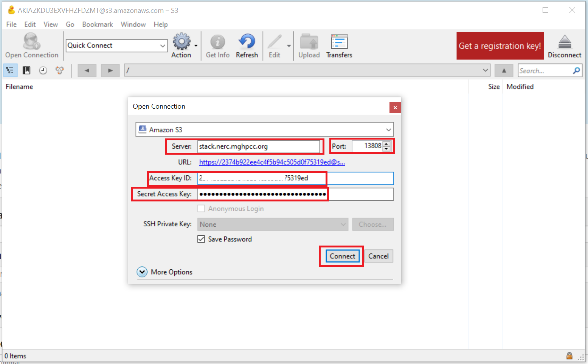
Using Cyberduck
Then click "Connect" button to connect to your NERC project's Object Storage as shown below:
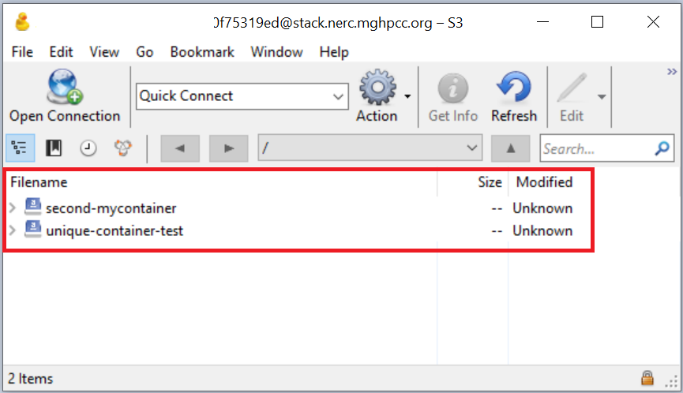